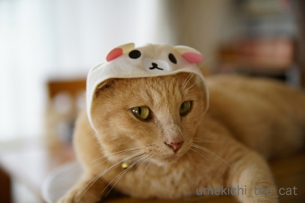
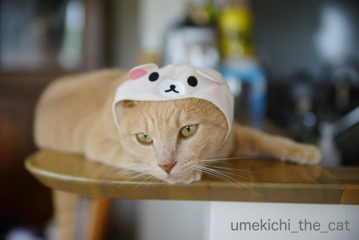
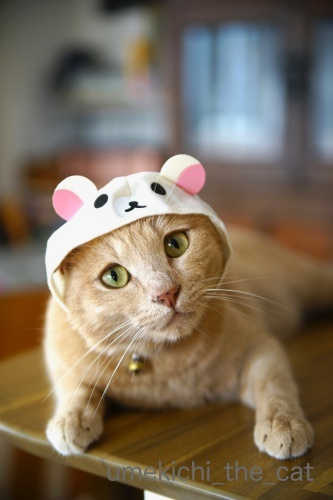
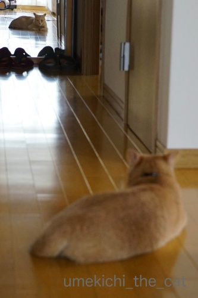
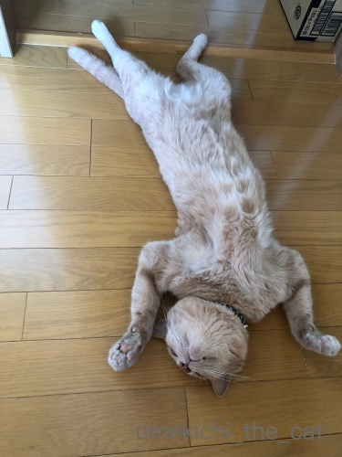
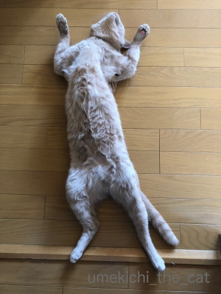

止まらない被り物愛 [梅吉]
おまけにきょうは あめ ざざぶりや
どなたはんも たいちょうかんり きぃつけてや
さいきん わしな おとーさんが にこにこしながら かえってきたら
ちゅういせなあかんって きづいたんや


たいがいにしいや ともおもってるんやで
せやけどよのなか ついあってもんがある おかーさんがいうとる

（おかーさんもよろこんでますw）
そんな梅吉さんは

最近鏡をじっと見つめてます( ´艸｀)
気になる猫さんでもいますか？
幼い頃は喧嘩をふっかけていた事もありましたよ。
（11秒 音が出ます！再掲載の動画です＾＾）
止まらないおっとの被り物購入。実はもう一個控えています ( ꒪⌓꒪)
そのうちアップ予定・・・
猫の開きが観測されました！
この台風が去ったら関西地方も梅雨明け近し！？

さあ！みなさん！！思いっきりもふもふしてください＾＾

結構無抵抗だったりします。
もちろんガブっとくる事もありますけどw
白いおパンツが全開〜〜。

カフェオレ色の梅吉

梅吉 2023年8月10日 永眠


梅吉と出会った譲渡会

犬猫の理由なき殺処分ゼロ
妄想広告
UMEKICHI 光

爆発的に早い！
時々攻撃的！
Thanks to Mr.Boss365
爆発的に早い！
時々攻撃的！
Thanks to Mr.Boss365

前回のもそうですが、この被り物をニヤニヤしながら（←想像ですm(__)m）
お買い求めになられている姿こそお撮りになって、猫バカ、ここにあり！と
アップしてほしいものです(^_^;) にしても、梅吉様の孝行ぶりに感服(^^)
「世界で一番可愛いのは誰？」と問い掛けてるわけではないのですね(^_^;)
by middrinn (2018-07-05 09:49)
おもいっきりモフモフさせていただきます！
ダイブして顔をうずめてモフモフすーはーします！
顔を流血しても気にしないわ！！！(笑)
りらっくまさん梅吉君、ちゃんとおつきあいで可愛い顔すること
覚えたのね(笑)
by リュカ (2018-07-05 09:58)
おはようございます。
被り物！！似合い過ぎです！！ハットモデル・梅吉君！！
ご主人の気持ちわかります！！小生も猫ばかでーす！！（⌒ー⌒）
モフモフ・甘嚙み等は問題ないですが・・・
この時期？換毛期は危険ですね！？やりますが！？(=^･ｪ･^=)
by Boss365 (2018-07-05 11:11)
鏡！かわいい〜。子猫さんならではなのかなぁ？
うちはテレビに猫が映ると、裏に回って見てました。
最近はやらなくなったので、これはテレビだ、とわかったのかも(^^)
by も〜 (2018-07-05 12:04)
あらあら旦那様も梅吉さんにメロメロですね(#^.^#)
こんなに可愛いんですもの！
買いたくなる気持ちも分かります♪
ってなんて無防備な開き！！
お腹にズボっと顔をうずめたいです♪
by きぃ (2018-07-05 15:59)
梅吉さんお付き合いえらいー。自分のお仕事わかっていらっしゃる。似合ってます。もう一つも楽しみ~。猫の開きもワシャワシャしちゃいますよー。最後のお写真は踊ってるようにも見えますが。
by zombiekong (2018-07-05 17:00)
うちの猫は鏡に映った自分に怯えていました(^^;)
梅吉さん、完全リラックスですね！
これはもふもふしなきゃいかんでしょう(^^)
by kou (2018-07-05 18:17)
梅吉さん鏡にジャンプしていますね！
最期は開きになっていますね(^^)
by ma2ma2 (2018-07-05 19:06)
見事な開きっぷりに、関西の梅雨明けを
確信いたしましたー(≧∀≦)
by よーちゃん (2018-07-05 20:43)
あら～梅吉さんかわいらしい(*^▽^*)
3枚目のアイドルのように小首かしげたお写真がたまりません♪
だんな様の楽しみにお付き合いしてあげる孝行息子ですね！
見事な万歳＼(^o^)／
ウチのはど～しても腕が伸び切らず、うらめしにゃ～になってしまいます^^；
by ゆきち (2018-07-05 21:13)
可愛いですね。
あと、素直に被ってくれる梅吉さんが素晴らしいです。^^;
（開きのお写真を拝見し）夏ですね～。^^;;
by yes_hama (2018-07-05 22:08)
梅吉さん、似合ってます！
大人しく被ってくれるもんですねぇ。
猫の開きも全開！豪快！
by ryang (2018-07-05 23:26)
わ、楽しそう～可愛い被り物♪
梅吉さんもしらーっとした顔だけじゃなくて、すっごく可愛いお顔もしてくれて！
満更でもない？
鏡に飛びつくのも可愛いですね～～子猫の頃、あるある！ですね。
梅雨明けの開きも最高～もふもふしたい＾＾
by sana (2018-07-06 00:04)
梅吉さん、体伸びてますね～～～～～～～^^
by ニコニコファイト (2018-07-06 07:17)
こ、これは・・・きっと罠ですね(°_°)
えぇ、私がモフったらがっつり頭を抱えられて
後ろキックを見舞われるに違いないです(*_*)
でもこんな素敵な開きは絶対にスルー出来ない(ｰ ｰ;)
罠だとわかってても引っかかる自分しか想像出来ませんw
by ニッキー (2018-07-06 07:42)
おとーさんがニコニコ帰ってきたら要注意だね(*^-^*)
でも、似合ってるし。よろこばしたろの可愛いお顔には私も大喜びだし。
たまには付き合ってほしいな。
鏡の中の子猫と戦う梅吉くんも可愛いね～。しっぽぷく～んだよ♪
梅吉くんの無防備な開きにはもふもふしたい衝動を抑えきれずｗ
カリカリを食べてるタラの背中にもふもふしておきました。
そして！梅吉くんの白いおパンツが気になって～
タラのパンツをチェックしてみたら！！・・・ノーパンでしたわよ(*ﾉωﾉ)
by emi (2018-07-06 16:29)
middrinnさん＞
おっとが「よし！次はガチャの前でガッツポーの自撮りだ！！」
と言っておりました。
被り物まだ増えそうですよ・・・・・
リュカさん＞
鼻にがぶーっとくるかもしれないので
その際は口に鼻を突っ込んでニオイ嗅いじゃってください(*>艸<)
赤ちゃんみたいに無臭ではないところが
猫変態ごころにヒットするかもしれませんwww
ここ２〜３個前の被り物くらいからかな、顔作るのよね・・・
笑っちゃいますよー＾＾
Boss365さん＞
梅吉には「くま系」の被り物が似合う様ですよ＾＾
「うみ系」はダメみたいですけどw
この湿気が多くて顔がベタベタしているのに
換毛期のにゃんこをもふもふ・・・
その後顔がムズムズしっぱなしですがやめられません！
私たち猫変態はそれが嬉しかったりして！？
も〜さん＞
大人になった今は鏡をじーーーっと見つめるだけになりました。
その背後から私も一緒に映り込むと
鏡の中の私を見て、次にリアルな私を見て不思議な顔をしていますよ( ´艸｀)
で、そのうち「わからへん、めんどくさっ！」と
プイッと行ってしまいますw
テレビの裏は覗きませんでしたが
鳥が飛んでる映像は画面外まで目で追っていましたよwww
きぃさん＞
おっと、「辛い時は梅吉の被り物の画像を見てるんだよ・・・」と
梅吉に話しかけていました。
相当メロメロな様子www
にゃんこの毛はわんこよりも細くて柔らかいので
顔に付きまくりますよー ( ´艸｀)
zombiekongさん＞
最近求められていることがわかっている様な梅吉ですw
もう一つの被り物は、ほとぼりが冷めた頃にアップしますね＾＾
ワシャワシャは喉ゴロゴロが聞けるかもしれませんよ！！
基本かまってちゃんですからー(≧▽≦)
kouさん＞
鏡を怖がっちゃうのはかわいそうですね・・・
知らないにゃんこがいる！！って思ってたのかな。
梅吉は「あんた、だれー？」って感じですw
もふもふ大歓迎ですよ＾＾ささ！どうぞ、どうぞー！！
ma2ma2さん＞
鏡にジャンプしてアタックしてました＾＾
暑いので体温調節も兼ねた開きです！
人間にちょっかい出されるのでおちおち開いていられませんがw
よーちゃん＞
来週からの週間天気は太陽と最高気温35℃の表示が(-_-メ)
灼熱地獄のはじまりかな・・・
ゆきちさん＞
そうそう！小首かしげるところがニクイですよねw
上目遣いもマスターしている様ですし次はアヒル口！？
うらめしにゃ〜の時もありますよー＾＾
そんな時はお手手に全く力が入っていないので
ぷらぷら揺らして遊ぶ（下僕が）のが好きでーすＯ(≧▽≦)Ｏ
yes_hamaさん＞
結構な数の被り物をこなして来たので余裕でしょうか ( ´艸｀)
猫が開くと夏、感じますよね！
おそらく猫飼いのみに通用する季節の風物詩、でしょうね＾＾
ryangさん＞
すっかり慣れて（諦めて）被ってくれる様になりましたw
開く時は豪快に！漢、梅吉です(^_－)☆
sanaさん＞
はい＾＾キメ顔をしてくれましたよーＯ(≧▽≦)Ｏ
この上目遣いを見るとすっかりその気、まんざらでもないと思われますwww
鏡にはよく戦いを挑んでいました・・・
毎日肉球の跡がいっぱいついた鏡を拭くのが日課でしたよ(^▽^;)
ニコニコファイトさん＞
せすじを のばすと きもちええんやで=´ᆺ`= by 梅吉
ニッキーさん＞
そうそう！梅吉はそういう下僕を待っているのですよ( ´艸｀)
髪の毛ガブガブと鼻ガブもしますので
覚悟してくださいねー ( ´艸｀)
でもニッキーさんならきっと喜んでくれると確信www
emiさん＞
そうそう！大人しく被って可愛い顔してみんながよろこんでくれて・・・
これで世の丸く収まるってものですよね＾＾
幼い頃は夜中にもバッシンバッシン鏡を攻撃する音が
聞こえて来たりしていました。
翌朝鏡面を見ると肉球跡だらけw
毎日お掃除のしがいがありましたわw
タラくんったらノーパンなのねーーー！！！
ちょと照れながらじ〜っと見ちゃうわ(〃▽〃)
by ちぃ (2018-07-06 21:32)
大人しく被っちゃうから次のを買っちゃうのでしょうね。
被ってくれたら嬉しいし可愛いし＾＾
by ぽちの輔 (2018-07-07 07:00)
ざざぶりの雨、タイヘンじゃないです〜?!(@@;)
それにしても、鏡のよそ猫にケンカふっかけてたチビっこが、
「せけん」っちゅーもん学んで、おべんちゃらもでけるようにならはって〜♪
ほんでもって、そんだけ開けたら、いっちょ前やねぇ(^^)v
by のらん (2018-07-07 10:35)
リラックマが似合うとは範囲が広いですね。似合ってますよ。
美しく開いてます(^ ^)噛まれてもいいので顔をうずめたい(≧▽≦)
by palpal (2018-07-07 20:53)
あー！ これ入手されたのですね^^
梅ックマ、流し目でもきゃわわだぞ♡（*´∀｀*）
今日は、「かわいいかわいい」シリーズで
キャンディのかぶりもの見ました。迷ったけど、さすがに・・・^^;
梅吉開きは、夏開き？
鏡を見ているのは、自分磨きの一環ではなかろうか・・・
by Ja-Kou66 (2018-07-08 00:25)
ぽちの輔さん＞
そうなんです＾＾被せがいがあってついつい・・・www
何より似合うんです！！（親バカ(^▽^;)）
のらんさん＞
まぁ♡ のらんさんにいっちょ前のお墨付きをいただきましたー！！
まだまだぼんず、と思っているのですが
ちっこい頃の動画や写真をみるとつくづく大人になったなぁと
思う今日この頃です。
なので、夜中にタオルケットからはみ出た私の足にじゃれついて
寝込みを襲うのは本当にやめていただきたいwwwww
palpalさん＞
クマものは得意な様です＾＾ダメなのは海もの・・・
あざらしくんは玉砕でした。
でもあれは被り物自体に問題もある気がする！！
Ja-Kou66さん＞
はい！クマものは得意なので（ねこくまちゃんが我が家で大好評！）
おっとが勇んで購入＾＾
私もキャンディみました！洗濯おばさんにしかならないな、と
却下しちゃいました。
あれ、難易度高いですよね・・・
鏡をみて自分磨き！！私より女子力（女子じゃないけど）高いわーＯ(≧▽≦)Ｏ
by ちぃ (2018-07-08 16:40)
ちぃさん、
被り物の梅吉ちゃんは開きになったんですね。
一枚ｸﾀﾞｻｲ＾＾
鏡に向かって吠えたり？見つめたり？？梅吉ちゃんあっけに取られたり？？？
いや、音楽にのってくるみ割り猫(人)形バレリーナの主役のようです☆
すてきです☆
で、そろそろ鏡ってことわかったかな＾＾
うちも、実はネコがちょっとおかしくなる鏡面があります。
8年～10年(猫によって違う)かかってようやく、ネコ世界でも「あれは相手にするな！」と回覧板が回り切ったとこです。
ご主人様が選ばれた被り物、アップされますよね。
めっちゃたのしみですよぉおぉぉ♡>^_^<♡
by ake_i (2018-07-08 23:07)
ake_iさん＞
開きのご注文！ありがとうございます！！
いいぐあいにもふもふして食べごろですよぉ＾＾
今も活発な梅吉ですが小さいころのやんちゃぶりは
本当に凄かったですw
ぴょんぴょん跳ねまくってものすごい速さで家中を爆走して・・・
お料理なんて出来ないこともありました(^▽^;)
あの頃は「きぃぃぃっ！」となることもありましたけど
今は良い思い出ですww
鏡に戦いを挑むことはなくなりましたがじーーーーっと見つめるこの頃。
他の猫がいるとは思っていない様なんですがなんだろう？ナルシスト？？( ´艸｀)
by ちぃ (2018-07-09 17:41)